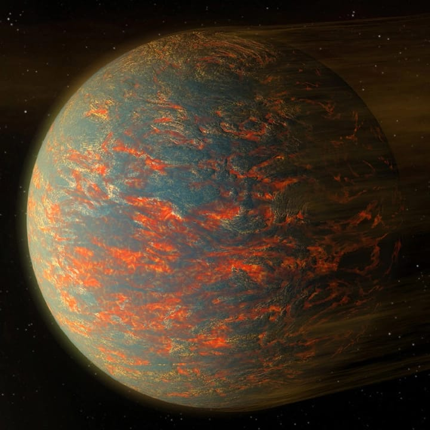
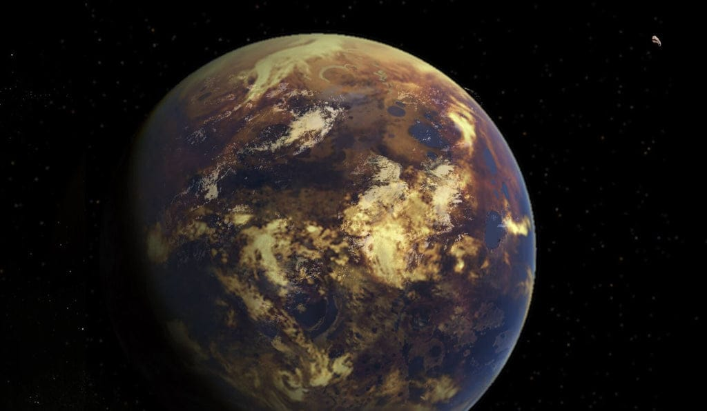
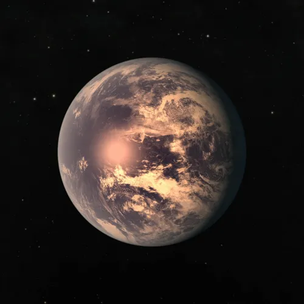

Speculoos2c★ Distance from Our Solar System
Distance: SPECULOOS-2c is located approximately 105 light-years away from our solar system.
Constellation: It lies within the constellation Eridanus. At 105 light-years, this is considered relatively close in astronomical terms, making it a suitable candidate for further detailed studies. ★ Discovery
Discovery Date: The discovery of SPECULOOS-2c was announced in September 2022.
Discovery Team: The planet was discovered by an international team of astronomers working with the SPECULOOS (Search for habitable Planets EClipsing ULtra-cOOl Stars) telescopes. The project’s name is a play on words, named after a type of cookie, while also serving an important scientific goal.
Telescope and Methods Used:
The SPECULOOS Southern Observatory, located in Chile, played a major role in the discovery.
Additional observations were made using NASA's TESS (Transiting Exoplanet Survey Satellite), which helps identify exoplanets by monitoring changes in the brightness of stars as planets transit in front of them.
SPECULOOS Project Goals: SPECULOOS aims to discover Earth-sized exoplanets in the habitable zones of ultra-cool dwarf stars, which are difficult to detect due to their faintness. The goal is to find planets close enough to Earth for future atmospheric studies.
★Characteristics
Type: SPECULOOS-2c is classified as a super-Earth, meaning it is a rocky planet with a mass and radius larger than Earth’s, but much smaller than the ice giants Uranus and Neptune.
Orbit: SPECULOOS-2c orbits an ultra-cool red dwarf star named LP 890-9 (SPECULOOS-2). This star is much cooler and smaller than our Sun.
Orbital Period: It has an orbital period of 8.46 days, meaning it takes only around 8.5 Earth days to complete one orbit of its host star. This is an indication that SPECULOOS-2c orbits very close to its star—much closer than Mercury is to the Sun.
Star Properties:
LP 890-9 is an ultra-cool dwarf, a type of red dwarf star that has a temperature much lower than our Sun (which is a G-type main-sequence star). Ultra-cool dwarfs are among the smallest stars, often only slightly larger than the largest gas giants.
The star is dim and emits lower energy, which means planets within its habitable zone must orbit much closer to sustain temperatures suitable for liquid water.
Comparison with Earth:
Size: SPECULOOS-2c is larger than Earth, with a radius estimated to be 1.37 times that of Earth. Its mass is also thought to be higher, although exact figures for mass are not always available for super-Earths like this.
Environment: Given the proximity to its host star, the environment of SPECULOOS-2c would be quite different from Earth. It likely receives constant stellar energy, with extreme differences in temperature between its day and night sides, assuming tidal locking.
Tidal Locking: The planet is likely tidally locked, meaning one side always faces the star (resulting in perpetual daylight), while the other side is in constant darkness. However, there may be a temperate "twilight zone" or terminator region where temperatures are moderate enough for life.
★ Why It Is Suitable for Life
Location in the Habitable Zone: SPECULOOS-2c lies within the habitable zone of its star, also known as the "Goldilocks zone." This is the region around a star where conditions might allow liquid water to exist, given suitable atmospheric pressure.
Temperatures Suitable for Liquid Water: Due to the star’s low luminosity and the planet’s proximity to it, temperatures on SPECULOOS-2c could allow liquid water to exist on its surface, assuming the right atmospheric conditions are present. This is one of the main requirements for habitability.
Host Star’s Characteristics:
Ultra-cool Red Dwarf: The host star, LP 890-9, is much dimmer and cooler than our Sun, which allows SPECULOOS-2c to orbit closely while maintaining conditions that could sustain water without the risk of overheating.
Stability: LP 890-9 is believed to be less active than many other red dwarfs, reducing the likelihood of harmful stellar flares that could strip away the planet’s atmosphere or make the surface inhospitable for life.
Atmospheric Possibility: If SPECULOOS-2c has an atmosphere, it could help distribute heat around the planet, moderating the extreme conditions that might otherwise arise due to its tidal locking.
★ Possibility of Life
Liquid Water Potential: One of the most important aspects that make SPECULOOS-2c potentially habitable is the possibility of liquid water. Since it lies in the habitable zone, the right atmospheric conditions could lead to the presence of surface water, a key ingredient for life.
Tidal Locking and Temperature Gradients:
Tidal Locking: If SPECULOOS-2c is tidally locked, there may be extreme conditions on its permanent day and night sides, with one side constantly facing the star (hot) and the other in perpetual darkness (cold). However, the twilight zone, or the region between the day and night sides, could have moderate temperatures, potentially allowing for habitable conditions.
Twilight Zone Habitability: In this zone, temperatures might be stable enough for water to remain in liquid form, which could make it possible for life to emerge, albeit under different conditions compared to Earth.
Atmospheric Retention and Resources:
Atmospheric Retention: A key factor for the habitability of SPECULOOS-2c is whether it can retain an atmosphere thick enough to support life. The presence of a stable atmosphere would also help moderate the temperature extremes between the day and night sides.
Resources: If liquid water exists, other basic building blocks of life, such as carbon-based compounds, might also be present. Studying the planet’s atmosphere for gases like oxygen, carbon dioxide, or methane could provide clues about potential biological activity.
Future Atmospheric Studies:
SPECULOOS-2c is located close enough to Earth (only 105 light-years) for future atmospheric analysis by telescopes such as the James Webb Space Telescope (JWST) and other advanced observatories.
Atmospheric Composition: Detecting specific molecules like water vapor, oxygen, or methane in the atmosphere could indicate processes that support life, either through biological or geophysical activity.
Summary
SPECULOOS-2c is a super-Earth exoplanet located about 105 light-years away in the constellation Eridanus. It was discovered in September 2022 by an international team using SPECULOOS telescopes and NASA's TESS. The planet orbits an ultra-cool red dwarf star named LP 890-9, within the star's habitable zone. While the planet is likely tidally locked, it has the potential for liquid water in the twilight zone, making it a strong candidate for habitability. Its close distance to Earth allows for future atmospheric studies to assess the potential for life.
Koi 5715
Koi 5715★ Distance from Our Solar System
Distance: KOI-5715.01 is located approximately 289 light-years from Earth.
Constellation: It is located in the constellation Cygnus, which is also home to several other well-known exoplanets detected by the Kepler mission.
★ Discovery
Discovery Date: KOI-5715.01 was initially identified as a Kepler Object of Interest (KOI) during the Kepler mission, which was operational from 2009 to 2018.
Discovery Team: It was identified by NASA’s Kepler Space Telescope, a mission dedicated to detecting Earth-like planets using the transit method, which observes changes in brightness as a planet passes in front of its host star.
Candidate Status: Currently, KOI-5715.01 is still considered a planet candidate (pending confirmation). More recent follow-up observations may confirm its status as a verified exoplanet.
★ Characteristics
Type: KOI-5715.01 is considered a super-Earth or potentially a mini-Neptune, depending on its mass and atmospheric composition. It is thought to have a size approximately 1.6 times the radius of Earth.
Orbit: It orbits its host star with a relatively long orbital period compared to many other exoplanets discovered by Kepler. The period is approximately 42 days, which means it has a wider orbit, contributing to milder temperature ranges that may be conducive to life.
Host Star:
KOI-5715.01 orbits a K-type main-sequence star. K-type stars are slightly smaller and cooler than the Sun, providing a more stable environment compared to the energetic, flare-prone red dwarfs.
Star Luminosity: The star’s luminosity is lower than the Sun’s, which means the habitable zone—the range at which liquid water could exist—lies closer to the star compared to Earth’s distance from the Sun.
Comparison with Earth:
Size: KOI-5715.01 is larger than Earth but smaller than the ice giants in our solar system. Its radius suggests it may have a thicker atmosphere, which could play a crucial role in regulating its climate.
Orbital Characteristics: With a longer orbital period and a cooler star, the planet might have more Earth-like seasons, which are crucial for biological diversity.
★ Why It Is Suitable for Life
Habitable Zone: KOI-5715.01 lies within the habitable zone of its star, where temperatures are suitable for the existence of liquid water—an essential ingredient for life as we know it.
Mild Temperature: Given that it orbits a K-type star (which is less volatile compared to red dwarfs), KOI-5715.01 likely has more stable temperatures and less exposure to harmful stellar activity, like flares.
Potential Atmosphere:
Atmosphere Thickness: Its size suggests that it may have retained a substantial atmosphere, which could contribute to stabilizing surface temperatures and protecting any potential surface water from evaporation.
Temperature Moderation: If KOI-5715.01 has a dense atmosphere, it could facilitate the greenhouse effect, which may help to moderate extreme temperatures and maintain a climate that could support life.
★ Possibility of Life Liquid Water: Because KOI-5715.01 lies within the habitable zone, it has the potential to support liquid water on its surface. Liquid water is a critical component for the development of life, as it acts as a solvent for biochemical reactions.
Atmospheric Retention: Its size, larger than Earth, indicates that it could have retained a dense atmosphere, which could protect it from radiation and maintain surface water stability.
Stable Stellar Environment: Compared to planets orbiting red dwarfs, KOI-5715.01 orbits a K-type star, which is known to be relatively stable, with fewer flares and less variability. This stability could offer a conducive environment for life to emerge or persist.
Potential Biosignatures: If it has an atmosphere, future telescopes could potentially detect biosignature gases like oxygen, methane, or other chemicals that might suggest biological processes. This makes KOI-5715.01 a prime candidate for atmospheric study.
★ What Makes It Different from Other Exoplanets & Special Characteristics Host Star Type: Unlike many other potentially habitable exoplanets that orbit volatile red dwarfs, KOI-5715.01 orbits a K-type star. This type of star is more stable and cooler than our Sun, with a longer lifespan, which offers a greater window for life to develop and evolve.
Longer Orbital Period: With an orbital period of 42 days, KOI-5715.01 has a relatively wide orbit for a planet around a cooler star. Many habitable exoplanets orbiting red dwarfs have orbital periods of less than 10 days, which can lead to extreme environments due to the proximity to their host stars.
Moderate Climate: Its position in the habitable zone and the likely presence of an atmosphere could lead to a more moderate and stable climate compared to many other exoplanets, especially those that are tidally locked or orbit highly active stars.
Density and Composition: KOI-5715.01, being larger than Earth, may have a unique composition that includes a mix of rock and gases, potentially indicating a thicker atmosphere that can support climate stability.
Future Study Potential: The distance of 289 light-years makes it within reach of next-generation telescopes like the James Webb Space Telescope (JWST) and other observatories designed to analyze exoplanetary atmospheres. The presence of a thick atmosphere and its size increase the likelihood that we could detect chemical signatures indicative of habitability.
Summary
KOI-5715.01 is a potentially habitable super-Earth located about 289 light-years from Earth in the constellation Cygnus. It was discovered by the Kepler Space Telescope and is classified as a candidate planet. The planet lies in the habitable zone of a stable K-type star, which provides a favorable environment for potential life. Its larger size suggests the presence of a substantial atmosphere, which could help moderate the climate and support liquid water. KOI-5715.01’s relatively long orbital period and stable host star make it different from many other habitable exoplanets, which often orbit volatile red dwarfs at close distances. Its potential for a stable climate, moderated by a dense atmosphere, makes it an intriguing candidate for further study of habitability.
Keplar-220e

Keplar-220e★ Distance from Our Solar System Distance: Kepler-220e is located approximately 1,100 light-years from Earth.
Constellation: It is situated in the constellation Cygnus, which is known for housing several exoplanetary systems discovered by the Kepler Space Telescope.
★ Discovery Discovery Date: Kepler-220e was confirmed as an exoplanet in January 2014.
Discovery Team: It was discovered by NASA’s Kepler Space Telescope during its mission to find Earth-like planets in the habitable zones of stars.
★ Characteristics Type: Kepler-220e is classified as a super-Earth, with a radius about 1.6 times that of Earth.
Orbit: It orbits its host star, Kepler-220, in a nearly circular orbit.
Orbital Period: Kepler-220e has an orbital period of 77.6 days, indicating that it completes its orbit relatively quickly compared to Earth.
Host Star:
Star Type: Kepler-220 is a G-type main-sequence star, similar to our Sun but slightly cooler and less luminous.
Comparison with Earth:
The planet's orbit lies within the habitable zone of its host star, which provides potential conditions suitable for liquid water.
The lower luminosity of Kepler-220 means that its habitable zone is closer to the star compared to Earth’s position in the solar system. ★ Why It Is Suitable for Life Habitable Zone: Kepler-220e is located within the habitable zone of its star, where conditions may be suitable for the presence of liquid water on its surface.
Potential for Liquid Water: Given its position in the habitable zone, Kepler-220e could maintain liquid water if it has the right atmospheric conditions.
Atmospheric Composition: If the planet has a sufficiently thick atmosphere, it could help to regulate surface temperatures and provide the necessary pressure for liquid water to exist.
★ Possibility of Life Surface Conditions: The conditions on Kepler-220e may be suitable for life, especially if the planet possesses a stable atmosphere that can maintain liquid water.
Atmospheric Possibility: The super-Earth size indicates that it might have retained an atmosphere, potentially leading to climate conditions that support biological processes.
Future Study Potential: Further observations and studies are needed to analyze the planet's atmosphere, which may reveal biosignature gases that indicate the potential for life.
★ What Makes It Different from Other Exoplanets & Special Characteristics Super-Earth Status: As a super-Earth, Kepler-220e stands out due to its larger size, which could lead to different atmospheric conditions compared to smaller, Earth-like exoplanets.
Orbital Characteristics: Its relatively short orbital period of 77.6 days places it close to the star, yet still within the habitable zone, a configuration that is less common among discovered exoplanets.
Stable Stellar Environment: Orbiting a G-type star provides a more stable environment compared to planets orbiting smaller, more active stars, increasing its potential habitability.
Comparison to Earth: The conditions on Kepler-220e could resemble those on Earth in terms of potential water presence, but its higher gravity and atmospheric composition could create different weather patterns and climates.
Summary
Kepler-220e is a super-Earth located approximately 1,100 light-years away in the constellation Cygnus. Discovered by NASA’s Kepler Space Telescope, it orbits a G-type star similar to our Sun within the star's habitable zone. The planet's size suggests that it could retain a significant atmosphere, which might allow for liquid water to exist on its surface. With an orbital period of 77.6 days, Kepler-220e presents an intriguing opportunity for further study in the search for potentially habitable worlds beyond our solar system. Its unique characteristics as a super-Earth and its position in a stable star system make it a promising candidate for understanding the diversity of planetary environments capable of supporting life.
Gliese 667 Cc

Gliese 667 Cc★ Distance from Our Solar System Distance: Gliese 667 Cc is located approximately 23.62 light-years from Earth, making it one of the nearer exoplanets to our solar system.
Constellation: It resides in the constellation Scorpius, which is known for its distinct shape and bright stars. The proximity of Gliese 667 Cc makes it a prime candidate for further study.
★ Discovery Discovery Date: Gliese 667 Cc was confirmed as an exoplanet in 2012.
Discovery Team: The planet was discovered by an international team of astronomers using the radial velocity method to analyze the movement of its host star, Gliese 667 C. The research was primarily conducted at the European Southern Observatory (ESO) in Chile.
Significance of Discovery: Gliese 667 Cc is part of the Gliese 667 system, which includes multiple planets. Its discovery highlighted the potential for finding Earth-like conditions around stars that are relatively close to our own solar system.
★ Characteristics Type: Gliese 667 Cc is classified as a super-Earth, with a mass approximately 4.5 times that of Earth. This size suggests it may have a solid surface and possibly a substantial atmosphere.
Orbit: The planet orbits its host star, Gliese 667 C, in a circular orbit.
Orbital Period: Gliese 667 Cc completes its orbit in 28 days, which means it experiences a much shorter year than Earth, likely resulting in different seasonal patterns and climate variations.
Host Star:
Star Type: Gliese 667 C is a M-type red dwarf star, which is cooler and smaller than our Sun. The star's lower luminosity impacts the conditions on its orbiting planets.
Star Characteristics: With a surface temperature around 3,200 K, Gliese 667 C has a longer lifespan than more massive stars, providing an extended timeframe for the potential development of life on orbiting planets.
★ Why It Is Suitable for Life Habitable Zone: Gliese 667 Cc is situated in the habitable zone of its star, which is the region where temperatures may allow for liquid water to exist on the planet's surface.
Potential for Liquid Water: The conditions in the habitable zone imply that if Gliese 667 Cc has a suitable atmosphere, it could maintain temperatures that allow for liquid water, a critical element for life.
Atmospheric Composition: If Gliese 667 Cc has a thick atmosphere, it could regulate temperatures through a greenhouse effect, making it more likely for the planet to support life.
★ Possibility of Life Surface Conditions: The conditions on Gliese 667 Cc may be conducive to life, particularly if the planet possesses a stable atmosphere that can sustain liquid water. The presence of water would be a significant factor for habitability.
Atmospheric Possibility: The planet's larger size could allow it to retain a more massive atmosphere, potentially creating conditions for diverse climates and weather patterns.
Future Study Potential: Further observations are needed to analyze the planet's atmosphere and surface conditions. The study of biosignature gases could reveal potential biological processes occurring on Gliese 667 Cc.
★ What Makes It Different from Other Exoplanets & Special Characteristics Super-Earth Classification: Gliese 667 Cc is notable for being one of the most studied super-Earths in the habitable zone of a red dwarf star. Its mass and size open possibilities for geological activity and atmospheric retention.
Host Star Characteristics: Being in the habitable zone of an M-type red dwarf star, which has a longer lifespan than more massive stars, increases the chances for life to develop over extended periods.
Stable Conditions: The stable stellar environment of Gliese 667 C suggests that planets in this system may experience less stellar radiation and variability, allowing for a more stable climate conducive to life.
Research Interest: Gliese 667 Cc has garnered significant attention from the scientific community due to its potential for habitability, making it a key target for future exoplanet research and observation missions.
Summary
Gliese 667 Cc is a super-Earth located approximately 23.62 light-years away in the constellation Scorpius. Discovered in 2012, it orbits an M-type red dwarf star within its habitable zone, where conditions may support liquid water on its surface. With a mass about 4.5 times that of Earth and an orbital period of just 28 days, Gliese 667 Cc presents a unique opportunity for further exploration in the search for potentially habitable worlds beyond our solar system. Its distinct characteristics, including its size and position around a stable red dwarf star, make it a compelling subject for ongoing research into the possibilities of life on exoplanets.

Trappist-le★ Distance from Our Solar System
Distance: Gliese 667 Cc is located approximately 23.62 light-years from Earth, making it one of the nearer exoplanets to our solar system.
Constellation: It resides in the constellation Scorpius, which is known for its distinct shape and bright stars. The proximity of Gliese 667 Cc makes it a prime candidate for further study.
★ Discovery Discovery Date: Gliese 667 Cc was confirmed as an exoplanet in 2012.
Discovery Team: The planet was discovered by an international team of astronomers using the radial velocity method to analyze the movement of its host star, Gliese 667 C. The research was primarily conducted at the European Southern Observatory (ESO) in Chile.
Significance of Discovery: Gliese 667 Cc is part of the Gliese 667 system, which includes multiple planets. Its discovery highlighted the potential for finding Earth-like conditions around stars that are relatively close to our own solar system.
★ Characteristics Type: Gliese 667 Cc is classified as a super-Earth, with a mass approximately 4.5 times that of Earth. This size suggests it may have a solid surface and possibly a substantial atmosphere.
Orbit: The planet orbits its host star, Gliese 667 C, in a circular orbit.
Orbital Period: Gliese 667 Cc completes its orbit in 28 days, which means it experiences a much shorter year than Earth, likely resulting in different seasonal patterns and climate variations.
Star Type: Gliese 667 C is a M-type red dwarf star, which is cooler and smaller than our Sun. The star's lower luminosity impacts the conditions on its orbiting planets.
Star Characteristics: With a surface temperature around 3,200 K, Gliese 667 C has a longer lifespan than more massive stars, providing an extended timeframe for the potential development of life on orbiting planets
★ Why It Is Suitable for Life Habitable Zone: Gliese 667 Cc is situated in the habitable zone of its star, which is the region where temperatures may allow for liquid water to exist on the planet's surface.
Potential for Liquid Water: The conditions in the habitable zone imply that if Gliese 667 Cc has a suitable atmosphere, it could maintain temperatures that allow for liquid water, a critical element for life.
Atmospheric Composition: If Gliese 667 Cc has a thick atmosphere, it could regulate temperatures through a greenhouse effect, making it more likely for the planet to support life.
★ Possibility of Life Surface Conditions: The conditions on Gliese 667 Cc may be conducive to life, particularly if the planet possesses a stable atmosphere that can sustain liquid water. The presence of water would be a significant factor for habitability.
Atmospheric Possibility: The planet's larger size could allow it to retain a more massive atmosphere, potentially creating conditions for diverse climates and weather patterns.
Future Study Potential: Further observations are needed to analyze the planet's atmosphere and surface conditions. The study of biosignature gases could reveal potential biological processes occurring on Gliese 667 Cc.
★ What Makes It Different from Other Exoplanets & Special Characteristics Super-Earth Classification: Gliese 667 Cc is notable for being one of the most studied super-Earths in the habitable zone of a red dwarf star. Its mass and size open possibilities for geological activity and atmospheric retention.
Host Star Characteristics: Being in the habitable zone of an M-type red dwarf star, which has a longer lifespan than more massive stars, increases the chances for life to develop over extended periods.
Stable Conditions: The stable stellar environment of Gliese 667 C suggests that planets in this system may experience less stellar radiation and variability, allowing for a more stable climate conducive to life.
Research Interest: Gliese 667 Cc has garnered significant attention from the scientific community due to its potential for habitability, making it a key target for future exoplanet research and observation missions.
Summary
Gliese 667 Cc is a super-Earth located approximately 23.62 light-years away in the constellation Scorpius. Discovered in 2012, it orbits an M-type red dwarf star within its habitable zone, where conditions may support liquid water on its surface. With a mass about 4.5 times that of Earth and an orbital period of just 28 days, Gliese 667 Cc presents a unique opportunity for further exploration in the search for potentially habitable worlds beyond our solar system. Its distinct characteristics, including its size and position around a stable red dwarf star, make it a compelling subject for ongoing research into the possibilities of life on exoplanets.